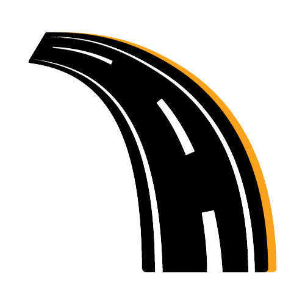
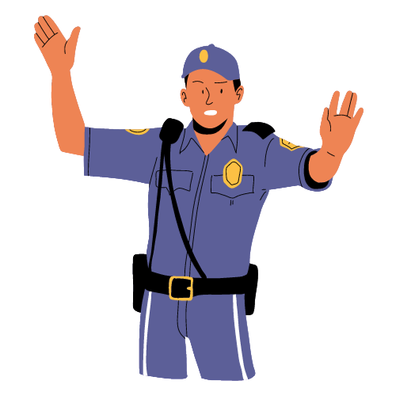

India has the second largest road network in the world with over 3 million km of roads of which 60% are paved. These roads make a vital contribution to the India's economy. On the whole, the facilities for the road users are not up to the mark, leading to a high toll of the death victims. Recently, there is a growing concern over the road crash problem.
With the advancement of technology, the most developed projects undertaken along with the real estate are the massive road building projects. But while new roads are being built, faster and faster automobiles are being invented in high numbers making road safety a crucial question.
Road safety is emerging as a major social concern in the country. The statistics are mind boggling with an average mortality rate of 100,000 persons dying in road accidents.
According to a survey from WHO, each year road traffic injuries take away lives of 1.2 million men, women, and children around the globe and injure many more. The death toll is on the higher side for the countries where pedestrians, motorcyclists and passengers are vulnerable and vehicles lack the safety norms, like India.
Let's peek into some India related facts:

- 85% of all road accident deaths occur in developing countries and nearly half in the Asia-Pacific region.
- India accounts for about 10 percent of road accident fatalities worldwide.
- An estimated 1,275,000 persons are grievously injured on the road every year.
- Social cost of annual accidents in India has been estimated at $ 11,000.
- Professionalism in driver training is absent, proportion of untrained drivers is continually on the rise and a positive driving culture is lacking.
In Indian perspective safety norms have lagged behind the international standards. Moreover, the international companies launch their vehicles on Indian Roads but somehow forget to implant safety measures that are mandatory abroad. To name a few these include: air bags and censors and many more.
It is really unfaithful that the authorities who have been assigned the duty to look after safety norms on Indian roads have not performed up to their marks. But, enhancing road safety is such a complex task that we all should shoulder the responsibility to achieve success in this area.
Hurdles in Road Safety
Although both the civilians and the Govt. officials are well informed about the urgency of the burning topic "Road Safety", still there are many hurdles in the path to implement "Road Safety" safely.
These are enlisted below:
- Civilians, the main victim, who make a huge hue and cry about the issue are responsible for lagging behind in the safety measures as these people on the first hand do not follow the already devised rules. One can easily spot people jumping traffic lights, driving while drunk, driving recklessly at super sonic speeds. Wearing seat belts is assumed as if they have been tied with the car seats. There is a need to understand that with such a vast population, it is the civil society on the first hand that has to play a crucial role in achieving success in this area.
- Poor infrastructure has lead to poor road designs. Roads are built without keeping their functionality in mind. The areas adjoining the new roads are made vacant to built broad roads, only to find that they get swarmed with traffic rush in no time. Roads should be made with proper planning keeping in mind their future utility, as vehicle population also grows with time.
- Vehicles designed for Indian roads are not up to the International Standards. Safety norms are not even close to international level. Even if some luxury cars have them, they run the pockets dry. There is a need to look for viable solution in this respect.
- Road are not well informed with the markings and signals. Line markings are not printed on all roads. Traffic signals are used for spiting and littering. Road barriers and other equipments are seen dwindling here and there on the roads.
- Government has implemented million dollar projects on building roads but it lacks proper planning. The corrupt government is the answer to all the sufferings of the Indian people. Tenders are opened for the known contractors only without checking the past records. Moreover, it is really ironical to note that the same contractors build roads abroad with 10 yrs warranty and when they build roads in India, They get washed away with the slightest showers.
- No Proper laws have been devised and those devised are not meant and dealt properly. Just drive as you like and if you happen to kill someone, just grease a few palms and walk into the sunset. Such is the height of corruption in India.
- Roads lack any facility for emergency services. In case of an accident there is no provision for first aid treatment near the intersections. Victims have to cost their lives as doctors and hospitals are usually not nearby.
Ultimately, it is the common man who has to suffer at the end of the road. Who should they blame for the sufferings?
Road Safety Tips
Road safety is a result of contributing efforts from all the sectors of the society including both civilians and Govt. officials. In addition to the human sufferings, the estimated costs of the road injuries are a noticeable amount in GNP per annum. So, some tips can be fruitful in this direction.
Few important Road Safety Tips are mentioned below :

- Don't use your mobile phone while driving.
- Belt up in the back.
- Don't drink and drive.
- Always adhere to speed limits.
- Take special care about children, senior citizens and pedestrians.
- Don't drive if tired.
- Pedestrians should walk cautiously.
- Always observe and anticipate other road users.
- Keep your distances.
- Always wear helmets and seat belts.